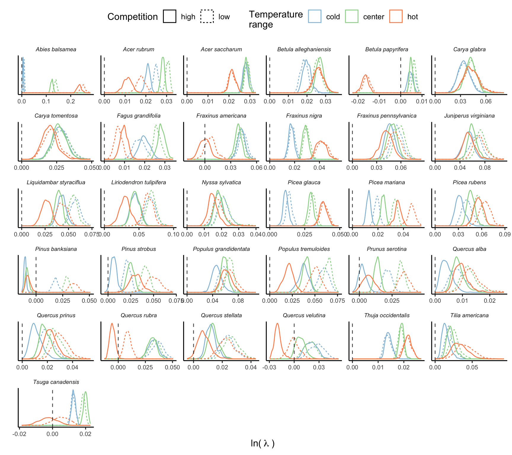
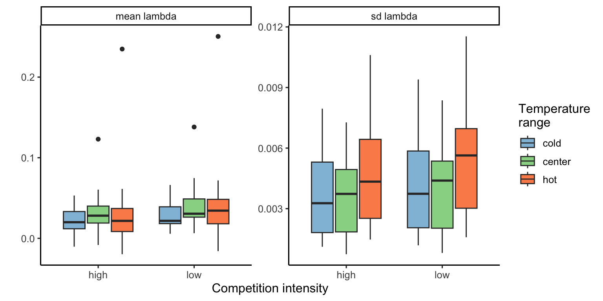
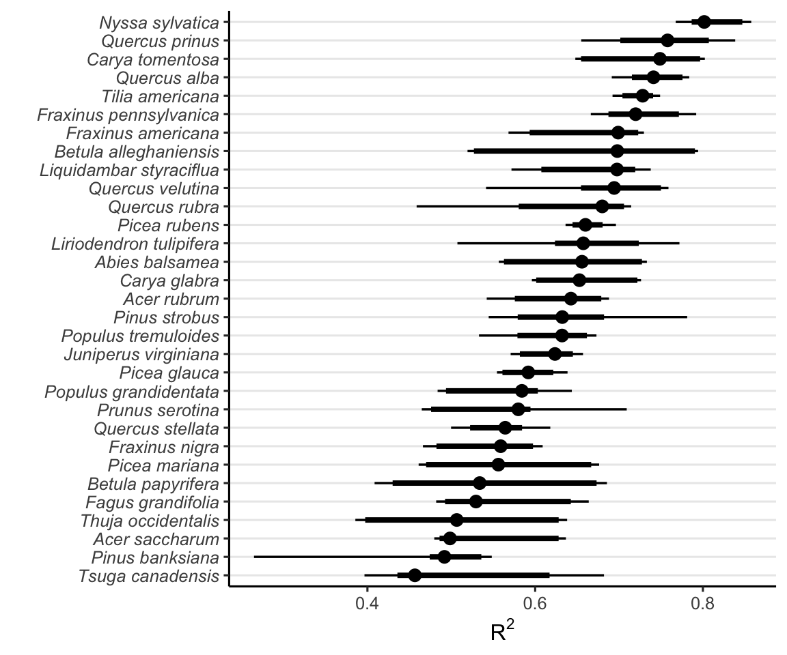
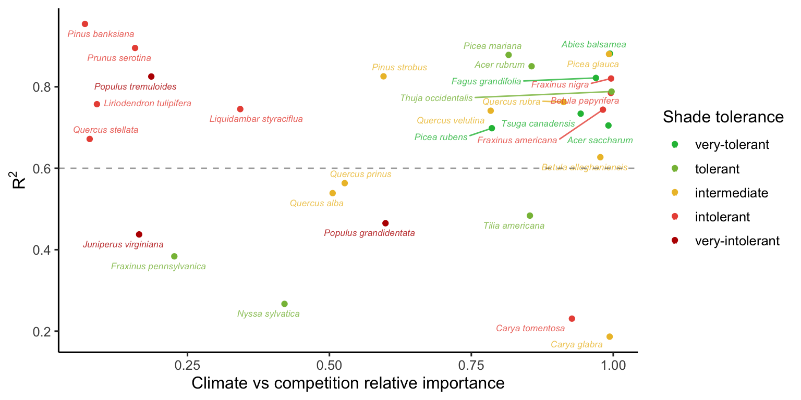

16 Sensitivity analysis
Here, we conducted a global sensitivity analysis (GSA) of the population growth rate (\(\lambda\)) with respect to demographic models. Sensitivity analysis uses various methods to decompose the total variance of an outcome into contributions from parameters or input variables. In structured population models, sensitivity analyses involve computing partial derivatives of \(\lambda\) to individual parameters, following Caswell (1978) as:
\[ \frac{\partial \lambda}{\partial \theta_i} \]
where theta represents a vector of \(i\) parameters. However, most methods quantify the local sensitivity of each parameter separately while holding all others constant (Saltelli et al. 2019). This approach can overlook the obscure parameter interactions often common in complex models. Furthermore, because of the high dimensionality of IPM due to the large number of parameters, these methods can quickly become computationally expensive.
To address this, we leveraged the efficiency of non-parametric models, such as random forests, for variable importance classification (Antoniadis, Lambert-Lacroix, and Poggi 2021). This approach offers speed and suits our study as it allows us to quantify both sources of variability in \(\lambda\). It accounts for the sensitivity of \(\lambda\) to each parameter and considers the uncertainty associated with the parameters. Therefore, a specific parameter may have higher importance because either \(\lambda\) is more sensitive to it or because the parameter is more uncertain.
We quantified the variability in population growth rate in function of the parameters using an insileco experimental approach. Specifically, we quantified the variability \(\lambda\) for different climate conditions, ranging from cold to the center and up to the hot mean annual temperatures experienced by each species. Furthermore, we combined the climate conditions with a low and high competition intensity. We defined the temperature ranges for each species using the 1st, 50th, and 99th percentiles. The low competition was defined as a population size of \(N = 0.1\), while high competition was set at the 99th percentile of the plot basal area. Precipitation was kept at optimal conditions computed based on the average optimal precipitation parameters among growth, survival, and recruitment models.
For each species, climate, and competition conditions, we computed \(\lambda\) 500 times using different draws from the posterior distribution, setting the plot random effects to zero. The code used for this analysis can be found in the forest-IPM GitHub repository.
Simulation Summary
The final simulation involved a total of 93000 draws across species and different conditions. The Figure 16.1 illustrates the distribution of \(\lambda\) computed using 500 random draws from the posterior distribution of parameters across different climate and competition conditions.

The Figure 16.2 presents the distribution of the average and standard deviation of \(\lambda\) across the 500 draws for each species.

Importance of demographic models
Random forest is a non-parametric classification or regression model that ranks each input variable’s importance in explaining the variance of the response variable. We used the permutation method for ranking variable importance (Breiman 2001). This method measures the change in model performance by individually shuffling (permuting) the values of each input variable. The greater the change in predictive accuracy with shuffling input values, the more important the specific variable will become. This is computed individually for each tree and then averaged across all \(n\) random trees. Finally, we normalized the importance output of each regression model so that they sum to 1. We used the R package ranger with default hyperparameters for fitting the random forest models (Wright and Ziegler 2017).
Figure Figure 16.3 shows the distribution of \(R^2\) from 20 random forest replications across different climate and competition conditions. These values range from 0.2 to 0.9, with an average value of 0.63 across species and conditions. This variation possibly reflects the uncertainty in the parameters across species.

As our primary interest lies in demographic levels rather than parameter levels, we focus on the combined importance of all parameters for each demographic model. This splits the total importance among the four demographic functions of the IPM: growth, survival, recruitment, and recruited size models. The recruited size model had an insignificant contribution to \(\lambda\), with nearly all random forest models showing a contribution below 1%. Thus, we omitted this model and concentrated on the growth, survival, and recruitment models, which collectively explain over 99% of the variation in \(\lambda\) Figure 16.4.
The ternary plots above show the raw importance data from the random forest, which can be challenging to interpret. The key message is that variance in \(\lambda\) is primarily explained by the recruitment and survival demographic models. Furthermore, certain conditions appear to shift the importance from recruitment to the survival model. In Figure 16.5, we explore the correlation between the importance of recruitment and survival under different covariate conditions.
We observe that at low competition, for most species, variations in \(\lambda\) are primarily explained by recruitment. This pattern slightly diminishes as we move from the cold range to the center and up to the hot temperature range. We can observe an overall shift toward the survival model at high competition intensity, especially in the hot temperature range.
Importance of covariates
Similar to assessing parameter importance, we also used the random forest approach to evaluate the importance of covariates. For simplicity, we used the same output of the simulations as previously explained, shifting the explanatory variables from parameters to covariates.1 The Figure 16.6 shows the distribution of relative importance between climate and competition covariates for each species.

Notes on Conspecific and Heterospecific Competition Effects
In the preceding discussion, we did not specify whether we were considering conspecific or heterospecific competition. For all the results presented in this chapter, the high competition condition was applied at the heterospecific level, while conspecific competition was set to a very low proportion. This choice is based on the standard invasion growth rate metric, or the population growth rate when rare, an important measure for quantifying population persistence (Lewontin and Cohen 1969).
Additionally, we performed the sensitivity analysis with the same conditions, except for changing the high competition from heterospecific to conspecific individuals. We observed that nearly all the variation in \(\lambda\), previously attributed to the growth model, shifted to the recruitment model. Also, the importance attributed to the survival model for certain species at the center and cold temperature conditions shifted toward the recruitment model. Although we observed this shift, the overall patterns remained similar to those discussed earlier. The only exception was the distribution of relative importance between climate and competition Figure 16.6, where many species had an increase in the importance of competition relative to climate. These observed differences primarily arise from the high sensitivity of \(\lambda\) to the \(\phi\) parameter.
This analysis could be expanded to include more marginal conditions beyond just cold, center, and hot temperatures and low and high competition. However, this would exponentially increase the number of simulations.↩︎